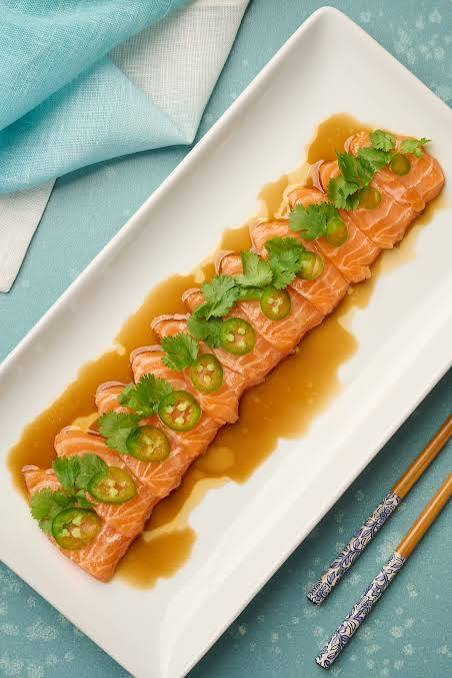
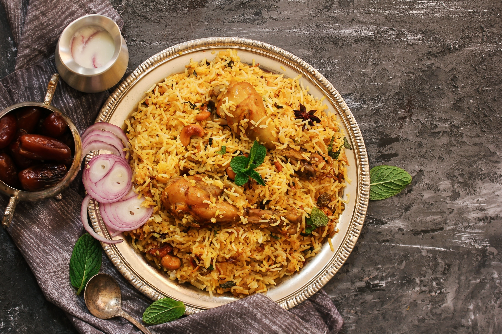
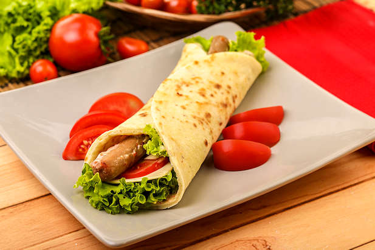

Sashimi

Jepang memiliki banyak makanan khas yang terkenal.
Sashimi adalah salah satu makanan tradisional khas Jepang.
Sashimi terbuat dari ikan atau makanan laut segar yang disajikan mentah.
Jenis ikan yang sering digunakan untuk sashimi adalah salmon dan tuna.
Sashimi biasanya dipotong tipis-tipis agar mudah dimakan.
Makanan ini memiliki rasa yang segar dan tekstur yang lembut.
Sashimi biasanya disajikan dengan kecap asin khas Jepang.
Selain kecap asin, sashimi juga sering dimakan bersama wasabi.
Sashimi biasanya dihias dengan irisan lobak dan daun segar.
Makanan ini sangat populer di Jepang dan dikenal di berbagai negara.
Sashimi menjadi salah satu makanan Jepang yang menarik untuk dicoba karena memiliki cita rasa yang khas.
Kabsa

Arab Saudi memiliki berbagai makanan khas yang lezat.
Kabsa adalah salah satu makanan tradisional khas Arab Saudi.
Kabsa terbuat dari nasi yang dimasak bersama rempah-rempah khas Timur Tengah.
Makanan ini biasanya menggunakan daging ayam, kambing, atau sapi.
Kabsa memiliki aroma yang harum dan menggugah selera.
Rempah-rempah yang digunakan antara lain kapulaga, kayu manis, cengkih, dan lada.
Nasi kabsa memiliki warna yang khas karena dimasak dengan bumbu rempah dan tomat.
Kabsa biasanya disajikan dalam piring besar untuk dimakan bersama keluarga.
Makanan ini sering disajikan dalam acara keluarga dan perayaan khusus.
Kabsa memiliki cita rasa gurih, lezat, dan kaya akan rempah-rempah.
Kabsa menjadi salah satu makanan terkenal dari Arab Saudi yang disukai oleh banyak orang.
Kebab

Turki memiliki banyak makanan tradisional yang terkenal.
Kebab adalah salah satu makanan tradisional yang terkenal dari Turki.
Kebab terbuat dari daging sapi, kambing, atau ayam.
Daging kebab dimasak dengan berbagai bumbu dan rempah-rempah.
Kebab biasanya disajikan dengan roti pipih atau tortilla.
Makanan ini sering ditambahkan sayuran seperti selada, tomat, dan bawang bombai.
Kebab memiliki cita rasa gurih, lezat, dan kaya akan rempah-rempah.
Saus yang digunakan pada kebab biasanya berupa saus tomat, mayones, atau saus pedas.
Kebab sangat populer sebagai makanan cepat saji di berbagai negara.
Makanan ini mudah ditemukan di restoran maupun pedagang kaki lima.
Kebab menjadi salah satu makanan khas Turki yang disukai oleh banyak orang karena rasanya yang enak.
bratwust
Jerman memiliki berbagai makanan khas yang menarik.
Bratwurst adalah salah satu makanan tradisional khas Jerman.
Bratwurst merupakan jenis sosis yang terbuat dari daging sapi, babi, atau sapi muda.
Sosis ini dibumbui dengan berbagai rempah-rempah khas Jerman.
Bratwurst biasanya dimasak dengan cara dipanggang atau digoreng.
Makanan ini memiliki aroma yang harum dan menggugah selera.
Bratwurst memiliki tekstur yang lembut dan rasa yang gurih.
Bratwurst biasanya disajikan bersama roti atau kentang.
Makanan ini sering dilengkapi dengan saus mustard.
Bratwurst sangat populer di Jerman dan sering dijual di pasar tradisional.
Bratwurst menjadi salah satu makanan khas Jerman yang terkenal di berbagai negara
hamburger
Amerika Serikat memiliki banyak makanan yang terkenal.
Hamburger adalah salah satu makanan yang sangat populer di Amerika Serikat.
Hamburger terdiri dari roti bundar yang diisi dengan daging sapi.
Daging hamburger biasanya dipanggang atau digoreng hingga matang.
Hamburger sering ditambahkan sayuran seperti selada, tomat, dan bawang bombai.
Makanan ini biasanya dilengkapi dengan keju, saus tomat, dan mayones.
Hamburger memiliki cita rasa gurih, lezat, dan mengenyangkan.
Hamburger sering disajikan bersama kentang goreng.
Makanan ini banyak dijual di restoran cepat saji.
Hamburger mudah ditemukan di berbagai negara karena sangat terkenal.
Hamburger menjadi salah satu makanan favorit banyak orang, mulai dari anak-anak hingga orang dewasa.